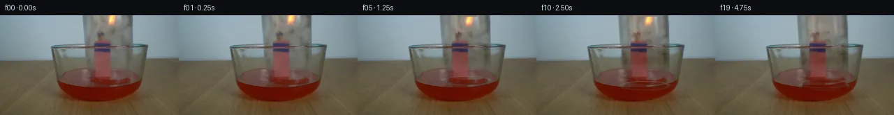

![首帧]()

Round 00
2026-11-05T17:46:06.025530+00:00像素候选变化代码 +239/−0inspection 更新
pixels 5ea042f2d72512fc · code a8e7af72d436a7d6
查看本轮 generate.py 真实 diff
--- previous/generate.py
+++ current/generate.py
@@ -0,0 +1,239 @@
+"""Photographic pixel continuation using local deterministic NumPy/SciPy operations.
+No image viewer, external model, network, renderer, or other scene input is used.
+"""
+from pathlib import Path
+import json
+import numpy as np
+from PIL import Image, ImageDraw
+from scipy.ndimage import gaussian_filter, map_coordinates
+import artifact_io
+
+ROOT = Path(__file__).resolve().parent
+W, H = 256, 144
+ORIGINAL = np.asarray(Image.open(ROOT / 'first_frame.png').convert('RGB')).copy()
+A = ORIGINAL.astype(np.float64)
+Y, X = np.mgrid[:H, :W].astype(float)
+DESCENT = np.array([0, .8, 2.2, 4.1, 6.4, 8.8, 11.1, 13.1, 14.6, 15.5, 16, 16, 16, 16, 16, 16, 16, 16, 16, 16])
+
+
+def smoothstep(a, b, v):
+ z = np.clip((v-a)/(b-a), 0, 1)
+ return z*z*(3-2*z)
+
+
+def sample(im, xx, yy, mode='nearest'):
+ return np.stack([map_coordinates(im[..., c], [yy, xx], order=1, mode=mode) for c in range(3)], axis=-1)
+
+
+def blend(im, color, opacity):
+ opacity = np.clip(opacity, 0, 1)[..., None]
+ return im*(1-opacity) + np.asarray(color)*opacity
+
+
+# Remove the measured bright flame from a working plate by interpolating
+# neighboring photographed glass RGB, not by altering frame zero.
+flame_free = A.copy()
+for y in range(21):
+ left = np.mean(A[y, 146:151], axis=0)
+ right = np.mean(A[y, 174:179], axis=0)
+ for x in range(149, 175):
+ z = np.clip((x-149)/25, 0, 1)
+ shade = left*(1-z) + right*z
+ alpha = smoothstep(149, 154, x)*(1-smoothstep(168, 174, x))*(1-smoothstep(13, 20, y))
+ flame_free[y,x] = A[y,x]*(1-alpha)+shade*alpha
+flame_residual = A-flame_free
+
+# Fit the blue photographic background separately for each row. The sampled
+# columns lie outside the jar and inside the unobstructed background.
+background = np.zeros_like(A)
+cols = np.r_[np.arange(98,117), np.arange(194,214)]
+for y in range(41):
+ for c in range(3):
+ coeff = np.polyfit(cols-155, A[y,cols,c], 2)
+ background[y,:,c] = np.polyval(coeff, np.arange(W)-155)
+
+# Estimate only the glass optical residual. Interpolate around the fixed
+# match bundle so its photographed shafts and heads do not translate.
+glass = np.zeros_like(A)
+for y in range(41):
+ glass[y] = flame_free[y]-background[y]
+ if y >= 23:
+ l = np.mean(glass[y,128:134], axis=0)
+ r = np.mean(glass[y,164:171], axis=0)
+ for x in range(134,164):
+ u = (x-133)/31
+ glass[y,x] = l*(1-u)+r*u
+ glass[y,:117] = 0
+ glass[y,192:] = 0
+# The bowl's optical effect dominates the lower portion; decay the jar-only
+# estimate toward its mouth instead of moving the bowl's photographed rim.
+profile = np.mean(glass[30:40],axis=0)
+for y in range(41,94):
+ attenuation = .72*(1-smoothstep(40,69,y))+.16*(1-smoothstep(66,93,y))
+ glass[y] = profile*attenuation
+# Keep photographic boundary pixels sharp while smoothing sensor-scale noise.
+glass = gaussian_filter(glass, sigma=(.55,.38,0))
+fixed_plate = flame_free-glass
+
+
+def displaced_glass(d):
+ sy = Y-d
+ # The jar extends out of shot; mirror sampled texture to supply the short
+ # previously cropped portion of the same glass, with smooth blending.
+ sampled_y = np.where(sy < 0, -sy*.65, sy)
+ sx = X + np.where(sy<0, -.10*sy, 0)
+ return sample(glass, sx, sampled_y)
+
+
… diff truncated; 152 more lines …